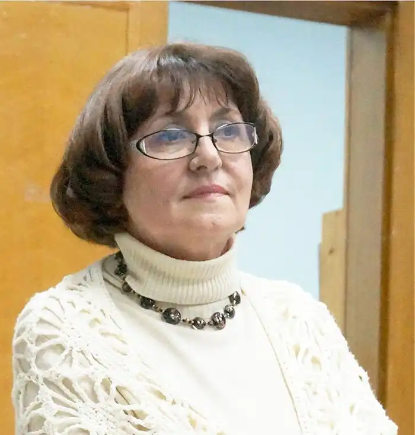
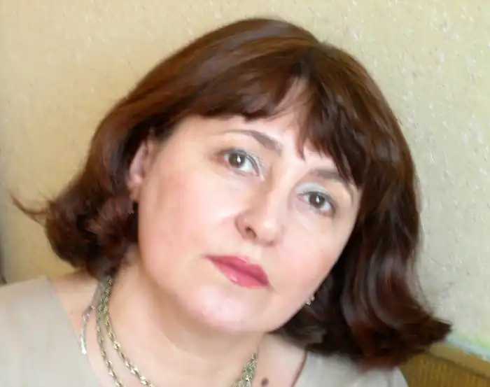

Неоніла Василівна Стефурак народилася 10 листопада 1951 в місті Коломия. Українська журналістка у сфері культури й духовності, письменниця.
Закінчила Львівський медичний інститут та Літературний інститут імені М. Горького в Москві. Протягом 10 років очолювала обласне літературне об'єднання "Іскри юності", працювала в редакціях Івано-Франківських газет "Світ молоді" і "Галичина", нині – на творчій роботі.
Авторка поетичних та прозових творів, п'єс, пісенних текстів, перекладів, віршів для дітей. Це, зокрема: "Мелодія краплин", "За плугом сонця", "Голуби і леви", "Дикі яблука", "Спалах", "Проща", "Терноцвіт", "Душа", "Заметіль", "Сакральний простір", "Два світи", "Над снігами і прірвами", "Квіти на морозі", "Подорожні", "Кольорові гусенята", "Жива абетка" та інші. З композиторами Павлом Дворським, Остапом Гавришем, Володимиром Домшинським, Зоєю Слободян, Лесею Малько створила низку пісень, що ставали лауреатами пісенних конкурсів і фестивалів. Видала два диски з піснями на власні вірші.